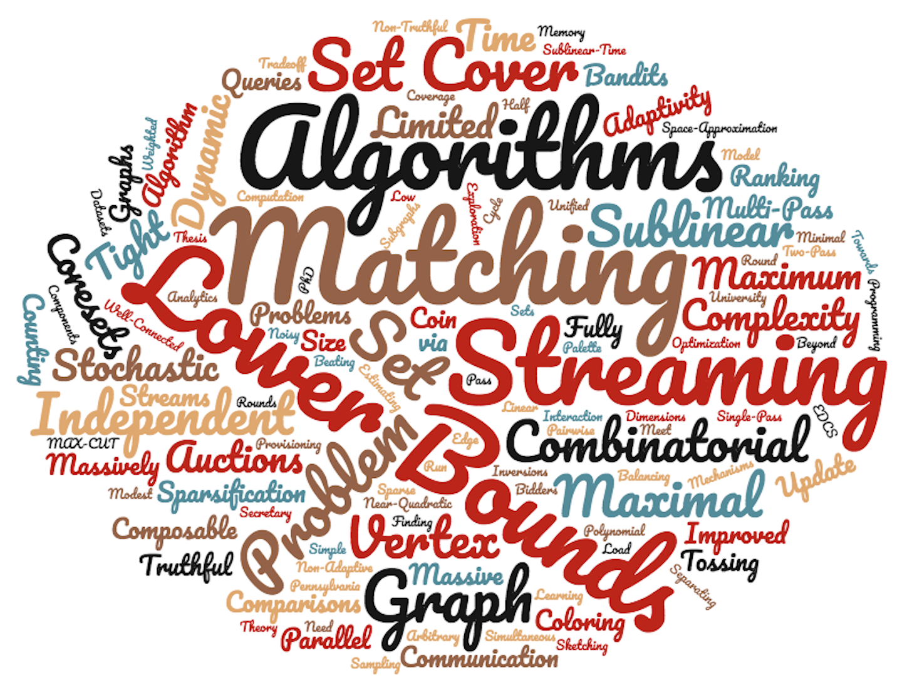

Sepehr Assadi
Assistant Professor Department of Computer Science, Rutgers University
Email: firstname (at) lastname (dot) info
Office: CoRE 310
I am an assistant professor in the Computer Science Department
at Rutgers University and part of the
Theory of Computing Group.
Prior to that, I spent a wonderful year as a postdoctoral researcher at Princeton University
supported by the Simons Algorithms and Geometry Collaboration. I received my PhD from the department of Computer & Information Science at University of Pennsylvania
and was extremely fortunate to have Sanjeev Khanna as my advisor.
I got my B.Sc. in Computer Engineering from Sharif University of Technology.
My research has been generously supported by the National Science Foundation (NSF) (Faculty Early Career Development (CAREER) Award: CCF-2047061), Google Research (Research Scholar Program), and Rutgers Research Council (Fulcrum Award).
Research Interests:
My primary research interest is in theoretical foundations of big data analysis. This in particular includes sublinear algorithms and lower bounds
in various models of computation for processing massive datasets such as streaming, distributed communication, massively parallel
computation, and sublinear time algorithms. More broadly, I am also interested in algorithmic graph theory, communication complexity, online algorithms, and algorithmic game theory.
Personal:
My better half, Mina Tahmasbi Arashloo, works on networking at University of Waterloo.
Prospective Students:
I am not admitting graduate students during the academic year 2022/2023 (and will not be able to respond
individually to applicants emails). If you are interested in the theory group at Rutgers, consider applying to our PhD Program.

Teaching
- • Current Courses:
- • Past Courses:
- CS 344: Design and Analysis of Computer Algorithms (Spring 2022)
- CS 514: Advanced Algorithms II -- Sublinear Algorithms (Fall 2021)
- CS 344: Design and Analysis of Computer Algorithms (Spring 2021)
- CS 671: Graph Streaming Algorithms and Lower Bounds (Fall 2020)
- CS 514: Advanced Algorithms II -- Sublinear Algorithms (Spring 2020)
- CS 344: Design and Analysis of Computer Algorithms (Fall 2019)
Professional Activities
- • Program Commitees:
FOCS 2023,
ICALP 2023,
SODA 2023,
ICDT 2023,
RANDOM 2022,
ESA 2022,
STOC 2022,
SODA 2022,
SOSA 2022,
PODC 2021, PODS 2021, ICALP 2020, SODA 2020 - • Junior PC: EC 2022, EC 2021, COLT 2021, COLT 2020
- • Journal editorial: SICOMP Special Issue of STOC 2022, TALG Special Issue of SODA 2020
- • Co-organizer of Rutgers/DIMACS Theory of Computing Seminar (Fall 2019--present)
Advising
I am very fortunate to be working/have worked with the following amazing students and postdocs:
- • Postdocs:
- Ariel Schvartzman (DIMACS postdoc, 2020--2022, now at Google Research in Mountain View)
- Nicole Wein (DIMACS postdoc, 2021--)
- Zihan Tan (DIMACS postdoc, 2022--)
- Prantar Ghosh (DIMACS postdoc, 2022--)
- • Graduate students:
- Chen Wang (PhD, 2019--)
- Vihan Shah (PhD, 2020--)
- Janani Sundaresan (PhD, 2021--)
- Parth Mittal (PhD, 2021--)
- Chaitanya Nalam (MS 2021, now a PhD student at University of Michigan)
- • Undergraduate students:
- Jakob Degen (summer intern, 2020)
- Hoai-An Nguyen (undergraduate researcher, 2022--)
- Andrew Chen (DIMACS REU 2020, now a PhD student at Cornell)
- Glenn Sun (DIMACS REU 2021, now an undergradute student at UCLA)
- Liubov (Luba) Samborska (DIMACS REU 2022, now an undergrduate student at Yale)
Publications
Click on each title for a summary of the paper, drafts, presentation slides, videos, etc. For further details, see [DBLP] and [Google Scholar].
- Tight Bounds for Monotone Minimal Perfect Hashing SODA 2023
- Generalizing Greenwald-Khanna Streaming Quantile Summaries for Weighted Inputs ICDT 2023
- Single-pass Streaming Lower Bounds for Multi-armed Bandits Exploration with Instance-sensitive Sample Complexity Neurips 2022
-
Rounds vs Communication Tradeoffs for Maximal Independent Sets
FOCS 2022
Invited to SICOMP special issue for FOCS'22 papers
- Asymptotically Optimal Bounds for Estimating H-Index in Sublinear Time with Applications to Subgraph Counting APPROX 2022
- Hierarchical Clustering in Graph Streams: Single-Pass Algorithms and Space Lower Bounds COLT 2022
- Decremental Matching in General Graphs ICALP 2022
- Deterministic Graph Coloring in the Streaming Model STOC 2022
- Brooks’ Theorem in Graph Streams: A Single-Pass Semi-Streaming Algorithm for ∆-Coloring STOC 2022
- SPINE: Scaling up Programming-by-Negative-Example for String Filtering and Transformation SIGMOD 2022
- An Asymptotically Optimal Algorithm for Maximum Matching in Dynamic Streams ITCS 2022
- Sublinear Time and Space Algorithms for Correlation Clustering via Sparse-Dense Decompositions ITCS 2022
- A Two-Pass (Conditional) Lower Bound for Semi-Streaming Maximum Matching SODA 2022
- Semi-Streaming Bipartite Matching in Fewer Passes and Optimal Space SODA 2022
- Ruling Sets in Random Order and Adversarial Streams DISC 2021
- Graph Connectivity and Single Element Recovery via Linear and OR Queries ESA 2021
- Fully Dynamic Set Cover via Hypergraph Maximal Matching: An Optimal Approximation Through a Local Approach ESA 2021
- On the Robust Communication Complexity of Bipartite Matching RANDOM 2021
- Beating Two-Thirds For Random-Order Streaming Matching ICALP 2021
- Graph Streaming Lower Bounds for Parameter Estimation and Property Testing via a Streaming XOR Lemma STOC 2021
- Improved Truthful Mechanisms for Subadditive Combinatorial Auctions: Breaking the Logarithmic Barrier SODA 2021
- A Simple Semi-Streaming Algorithm for Global Minimum Cuts SOSA 2021
- An Auction Algorithm for Bipartite Matching in Streaming and Massively Parallel Computation Models SOSA 2021
- Near-Quadratic Lower Bounds for Two-Pass Graph Streaming Algorithms FOCS 2020
- Multi-Pass Graph Streaming Lower Bounds for Cycle Counting, MAX-CUT, Matching Size, and Other Problems FOCS 2020
-
Improved Bounds for Distributed Load Balancing
DISC 2020
Best Paper Award at DISC'20
- Palette Sparsification Beyond (∆ + 1) Vertex Coloring RANDOM 2020
- Lower Bounds for Distributed Sketching of Maximal Matchings and Maximal Independent Sets PODC 2020
- Exploration with Limited Memory: Streaming Algorithms for Coin Tossing, Noisy Comparisons, and Multi-Armed Bandits STOC 2020
-
Separating the Communication Complexity of Truthful and Non-Truthful Combinatorial Auctions
STOC 2020
Invited to SICOMP special issue for STOC'20 papers
- Secretary Ranking with Minimal Inversions NeurIPS 2019
-
Improved Truthful Mechanisms for Combinatorial Auctions with Submodular Bidders
FOCS 2019
Invited to SICOMP special issue for FOCS'19 papersInvited to Highlights Beyond EC in EC'20 papers
- Massively Parallel Algorithms for Finding Well-Connected Components in Sparse Graphs PODC 2019
- Distributed Weighted Matching via Randomized Composable Coresets ICML 2019
- When Algorithms for Maximal Independent Set and Maximal Matching Run in Sublinear Time ICALP 2019
- Distributed and Streaming Linear Programming in Low Dimensions PODS 2019
- Polynomial Pass Lower Bounds for Graph Streaming Algorithms STOC 2019
-
A Simple Sublinear-Time Algorithm for Counting Arbitrary Subgraphs via Edge Sampling
ITCS 2019
Invited talk at TCS+ 2019
-
Sublinear Algorithms for (∆ + 1) Vertex Coloring
SODA 2019 and HALG 2020
Best Paper Award at SODA'19Invited to Highlights of Algorithms HALG 2020
- Coresets Meet EDCS: Algorithms for Matching and Vertex Cover on Massive Graphs SODA 2019
- Fully Dynamic Maximal Independent Set with Sublinear in n Update Time SODA 2019
- Stochastic Submodular Cover with Limited Adaptivity SODA 2019
- Towards a Unified Theory of Sparsification for Matching Problems SOSA 2019
-
Combinatorial Optimization on Massive Datasets: Streaming, Distributed, and Massively Parallel Computation
PhD Thesis
EATCS Distinguished Dissertation Award, 2019Rubinoff Dissertation Award for Best Computer Science PhD Thesis at University of Pennsylvania, 2019
- Fully Dynamic Maximal Independent Set with Sublinear Update Time STOC 2018
- Tight Bounds on the Round Complexity of the Distributed Maximum Coverage Problem SODA 2018
-
Randomized Composable Coresets for Matching and Vertex Cover
SPAA 2017 and HALG 2018
Best Paper Award at SPAA'17 (co-winner)Invited to Highlights of Algorithms HALG 2018Invited to TOPC special issue SPAA'17 papers
- Learning with Limited Rounds of Adaptivity: Coin Tossing, Multi-Armed Bandits, and Ranking from Pairwise Comparisons COLT 2017
-
Combinatorial Auctions Do Need Modest Interaction
EC 2017
Full version in TEAC special issue for EC'17 papers
-
The Stochastic Matching Problem: Beating Half with a Non-Adaptive Algorithm
EC 2017
Miscellaneous
- • Local links:
- • Some useful resources for early-year PhD students and students applying to graduate schools:
- PhD Rants and Raves (Be afraid. Be very afraid.) by Y. Smaragdakis
- How to Be a Successful PhD Student (in Computer Science (in NLP/ML)) by M. Dredze and H. M. Wallach
- Does one have to be a genius to do maths? by T. Tao
- A few words on research for graduate students by F. Chung
- • A Wordcloud of my publications topics (outdated at this point):

- • Local links: